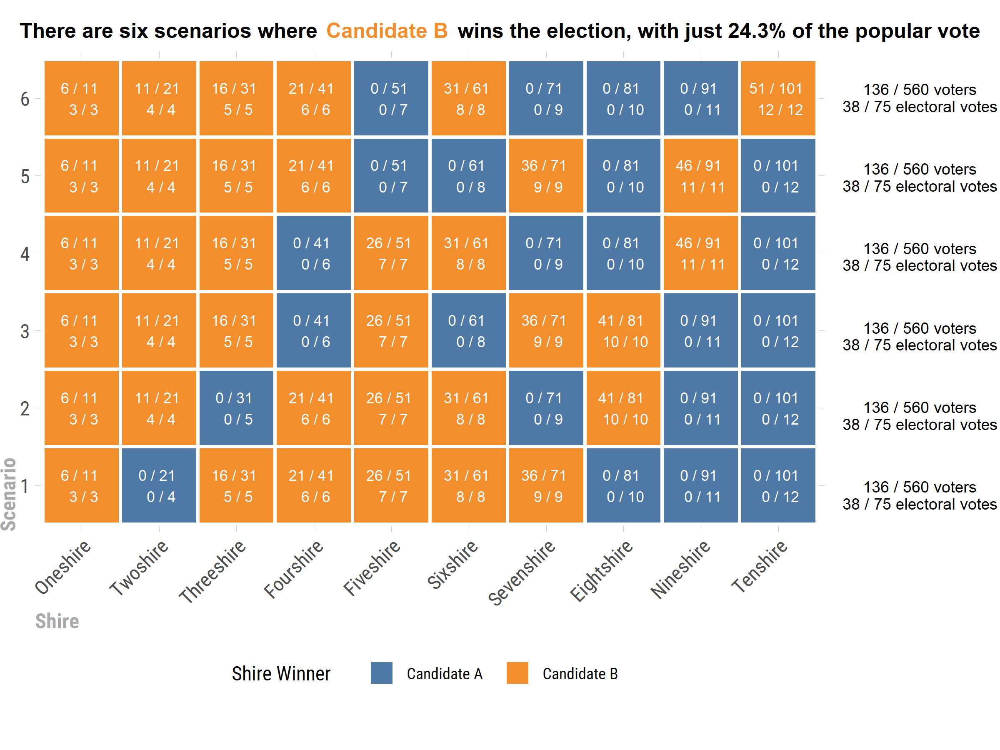

Rodrigo Revilla
Taken from FiveThirtyEight.
Riddler Township is having its quadrennial presidential election. Each of the town’s 10 “shires” is allotted a certain number of electoral votes: two, plus one additional vote for every 10 citizens (rounded to the nearest 10).
[…]
If there are two candidates running for president of Riddler Township, and every single citizen votes for one or the other, then what is the lowest >percentage of the popular vote that a candidate can get while still winning the election?

I will use a brute force method in order to solve this problem. I will consider all the possible combinations for the ten Shires. Each one of them has two possible outcomes (vote for candidate A or candidate B), making a total of (2^{10}) = 1,024 combinations
First, all the necesarry libraries are imported
r
library(R.utils) #for binary conversion
library(magrittr) #pipping
library(tidyverse) #dplyr, ggplot, etc
library(hrbrthemes) #custom theme for ggplot
library(cowplot) #adding grobs to ggplot
A dataframe containing information for each Shire is generated
r
shire <- c("Oneshire","Twoshire","Threeshire","Fourshire","Fiveshire","Sixshire","Sevenshire","Eightshire","Nineshire","Tenshire")
population <- c(11,21,31,41,51,61,71,81,91,101)
votes <- c(3,4,5,6,7,8,9,10,11,12)
shires <- data.frame(shire,population,votes)
shires %<>% mutate(votes_to_win_shire = population%/%2+1)
shires
## shire population votes votes_to_win_shire
## 1 Oneshire 11 3 6
## 2 Twoshire 21 4 11
## 3 Threeshire 31 5 16
## 4 Fourshire 41 6 21
## 5 Fiveshire 51 7 26
## 6 Sixshire 61 8 31
## 7 Sevenshire 71 9 36
## 8 Eightshire 81 10 41
## 9 Nineshire 91 11 46
## 10 Tenshire 101 12 51
A dataframe containing all posible combinations is generated. 1 represents a candidate and 0 represent his opponent. when the Shire’s electoral votes go towards a candidate, the majority of its popular votes go towards said candidate. Otherwise, the candidate receives 0 popular votes from that particular shire.
``` r numbers <- 0:1023 combinations <- as.data.frame(numbers) %>% mutate(binary = intToBin(numbers),numbers=NULL) combinations%<>% separate(binary,into=paste0("s", seq(1:10)),sep = "(?<=.)") combinations%<>% mutate(total_electoral_votes = ifelse(s1==1,votes[1],0)+ ifelse(s2==1,votes[2],0)+ ifelse(s3==1,votes[3],0)+ ifelse(s4==1,votes[4],0)+ ifelse(s5==1,votes[5],0)+ ifelse(s6==1,votes[6],0)+ ifelse(s7==1,votes[7],0)+ ifelse(s8==1,votes[8],0)+ ifelse(s9==1,votes[9],0)+ ifelse(s10==1,votes[10],0))
combinations %<>% filter(total_electoral_votes > Reduce("+",votes)%/%2) combinations%<>% mutate(total_population_votes = ifelse(s1==1,population[1]%/%2+1,0)+ ifelse(s2==1,population[2]%/%2+1,0)+ ifelse(s3==1,population[3]%/%2+1,0)+ ifelse(s4==1,population[4]%/%2+1,0)+ ifelse(s5==1,population[5]%/%2+1,0)+ ifelse(s6==1,population[6]%/%2+1,0)+ ifelse(s7==1,population[7]%/%2+1,0)+ ifelse(s8==1,population[8]%/%2+1,0)+ ifelse(s9==1,population[9]%/%2+1,0)+ ifelse(s10==1,population[10]%/%2+1,0)) ```
The optimal scenario is selected, by slicing the rows in the dataframe with the lowest number of popular votes. This results in 6 scenarios, where the winning candidate has 38 electoral votes (just over 50%) and a whooping 24.3% of popular votes.
``` r
combinations %>% top_n(n = -1, wt = total_population_votes) ```
## s1 s2 s3 s4 s5 s6 s7 s8 s9 s10 total_electoral_votes total_population_votes
## 1 1 0 1 1 1 1 1 0 0 0 38 136
## 2 1 1 0 1 1 1 0 1 0 0 38 136
## 3 1 1 1 0 1 0 1 1 0 0 38 136
## 4 1 1 1 0 1 1 0 0 1 0 38 136
## 5 1 1 1 1 0 0 1 0 1 0 38 136
## 6 1 1 1 1 0 1 0 0 0 1 38 136
r
136/Reduce("+",population)*100
## [1] 24.28571
Information is added to the six “optimal” scenarios, including the names of the shires, their population, etc.
r
solutions <- combinations %>% top_n(n = -1, wt = total_population_votes)
solutions %<>% mutate(solution_number = row_number())
solutions %<>% select(-total_electoral_votes,-total_population_votes) %>% gather(key="shire",value="winner",-solution_number)
solutions %<>% mutate(shire=recode_factor(shire,s1="Oneshire",s2="Twoshire",s3="Threeshire",s4="Fourshire",s5="Fiveshire",s6="Sixshire",
s7="Sevenshire",s8="Eightshire",s9="Nineshire",s10="Tenshire"))
solutions %<>% left_join(shires %>% select(shire,electoral_votes=votes,votes_to_win_shire,population))
solutions %<>% mutate(label=paste(ifelse(winner==1,votes_to_win_shire,0),"/",population,"\n",ifelse(winner==1,electoral_votes,0),"/",electoral_votes))
Finally, the scenarios are plotted and saved.
``` r
a <- solutions %>% ggplot(aes(x=shire,y=as.character(solution_number),fill=winner))+ geom_tile(color="white",size=1)+ ggthemes::scale_fill_tableau(name = "Shire Winner", labels = c("Candidate A", "Candidate B"))+ labs(x="Shire",y="Scenario")+ geom_text(aes(label=label),size=3,color="white")+ coord_fixed()+ theme_ipsum_rc()+ theme(axis.text.x = element_text(angle = 45,hjust = 1))+ theme(legend.position = "bottom")+ theme(axis.title.x = element_text(hjust = 0, vjust=0, colour="darkgrey",size=12,face="bold"))+ theme(axis.title.y = element_text(hjust = 0, vjust=3, colour="darkgrey",size=12,face="bold"))
additional_elements <- ggdraw() for (i in seq(0.34,0.87,0.106)) { additional_elements <- additional_elements + draw_label("136 / 560 voters\n38 / 75 electoral votes", x = 0.92, y = i,colour = "black",size=9) }
additional_elements <- additional_elements + draw_label("There are six scenarios where wins the election, with only 24.3% of the popular vote", x = 0.5, y = 0.96,colour = "black",fontface="bold",size=12) additional_elements <- additional_elements + draw_label("Candidate B", x = 0.3878, y = 0.96,colour = "#F28E2B",fontface="bold",size=12)
final_plot<-additional_elements+draw_plot(a+ theme(plot.margin = margin(t = 0, r = 1.4, b = 0, l = 0, unit = "in"))) save_plot("final_plot.png",final_plot,base_width=8,base_height=6) ```